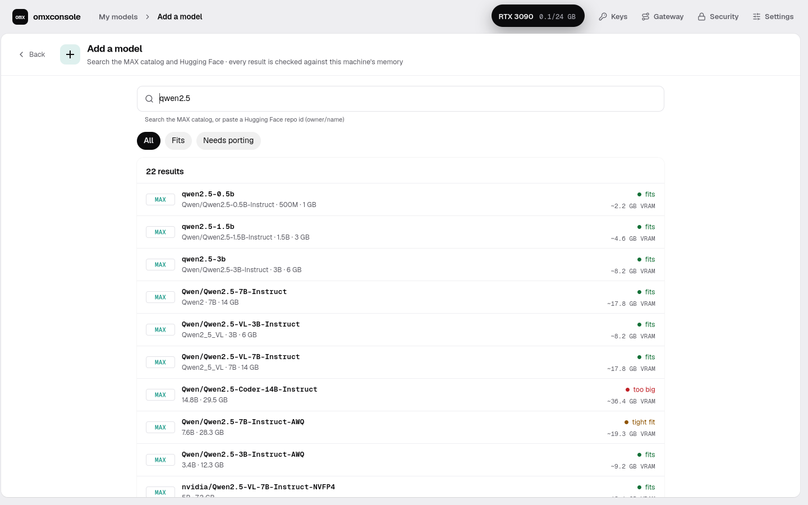
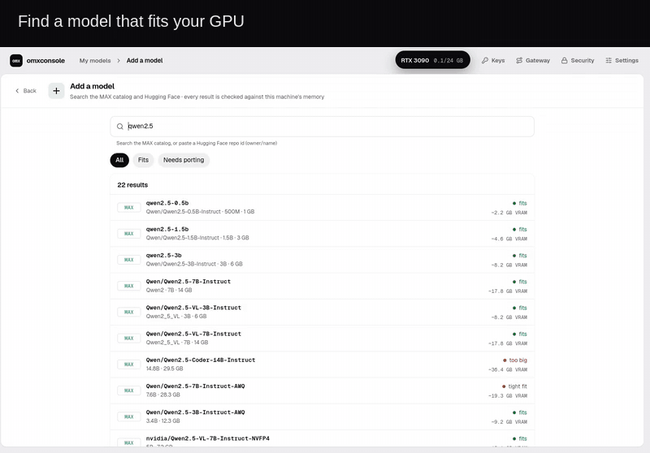
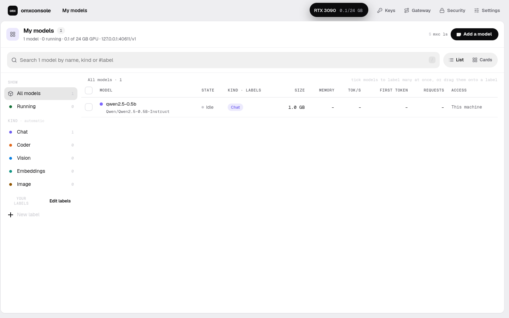

Find a model that fits.
Search the MAX catalog and Hugging Face. Download with progress, resume and cancel.
A native desktop app · built with omxcode
Find a model, download it and serve it from one app. MAX runs the models; omxconsole gives you a friendly place to manage them.
Public alpha · needs MAX installed · Linux serving verified; Mac launch tested
Setup, first model and platform notes → README

Your models, in one place

Search the MAX catalog and Hugging Face. Download with progress, resume and cancel.

Start and stop models, make an app key, inspect logs and run a benchmark. Use the endpoint from an OpenAI-compatible client.
People use the app. Agents use the same actions. omxcode exposes interactive controls as tools through its shared agent host. How it works ↗
I’d love to know how it runs on your machine, what you’d use it for and what’s missing. Feedback and contributions are welcome.